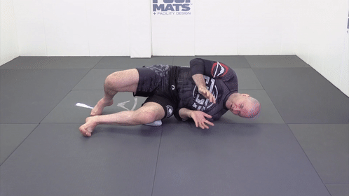

Таз не совсем вверх - мы хотим сместить противника вбок, а не просто поднять высоко вверх

Таз не совсем вверх - мы хотим сместить противника вбок, а не просто поднять высоко вверх
Колено в пол, пальцы ноги должны иметь возможность оттолкнуться от пола

Нас не должно сложить!

Голова - смотрим в ту сторону, в которую делаем мост

Не заваливаемся

Полный вариант правильный


Первое движение очень похоже на мост

Руки должны складываться вместе - во фрейм

Вид спереди - следим за ногами. Колено - в пол! Это даёт ему возможность выскользнуть из-под противника

Пола касаются ступни и плечо - это даёт подвижность

Не ползать по полу

Хотим добиться пересечения предплечья и нижнего колена (подтягиванем нижней стопы), перейти на другую сторону, потом обратно

Скользим тазом по полу. Мы должны отъехать до уровня наших плеч - внутренний угол между корпусом или ногами ~ 90 градусов.

Обязательно отставить вернюю стопу в начале движения. Иначе не будет упора. Данахер немного приподнимает таз

Пример

Подтягиваем таз к стопе

Вперёд - всегда на одной руке. Упираемся в стопу и ногу, бросаем таз вперёд

Назад можно на одной руке и на двух. На двух быстрее, но нет второй руки для защиты

Между рукой и коленом - рамка, чтобы противник не залетел на болевой на руку

Креветимся, когда на боку - крестим ноги, подтягиваем ноги - можем выходить в другую позицию

Когда на боку - мы собраны - иначе очень тяжело перевернуться

Фронтальный вид - нога рядом с тазом, упирается в пол. После креветки корпус собран

После поворота верхнее плечо над нижний - не разваливаемся. Меняем ноги, нижняя нога активно (чтобы не распластяться) толкается от матов

Принцип работы ног

Положение корпуса, рук, ног

Грудная клетка смотрит вниз, иначе легко завалиться назад

Встаём

Пример

Ступни, колени, бёдра - задействовано всё. Пример ленивого и более агрессивного движения

Фронтальный вид - обратное движение

Пример. Добавить примеры восстановления из гарда

Пример. Касаемся сзади плечей матов одной ногой, второе колено проходит под ней, восстанавливаем гард. В идеале развернуться на 180 градусов

Мы собраны, спина круглая, иначе сложно перевернуться

Одна нога тянется к матам - не нужно двумя

Пример. Голова вверх, грудь - вперёд

Не терять равновесиe
На одном плече

Granby-roll


Forward-roll. В идеале - прямые ноги

Полный набор

Не встаём на противника двумя фронтальными ногами - нас могут опрокинуть

Пример с оппонентов

Встаём - вид сзади. Идея в том, чтобы ступни не оказались рядом

Не заваливаемся вперёд - спина прямая, ноги пружинят

Руки идут вдоль коленей

Медленно. Нога в сторону, бэк стэп, одновременно продёргиваем ноги оппонента. Занимаем положение сбоку от оппонента

Ролл

Обходим в 3 шага


Внимательно смотрим за движениями - стойка всегда меняется - нижняя, верхняя, фронтальная. Ноги, руки (защита).

Внимательно смотрим за движениями - стойка всегда меняется - нижняя, верхняя, фронтальная. Ноги, руки (защита).

Сгибаем-разгибаем позвоночник

Круг на плечах

Круг без рук

Катаемся на спине

Соединяем с кругом на плечах/шее

Продвинутый мост - переходим под углом 90 в обе стороны

Делаем мост без перерыва

Ошибка - не доводить мост до конца

Качаем шею

Ходим - локти вместе с коленями

Cruxifix-roll